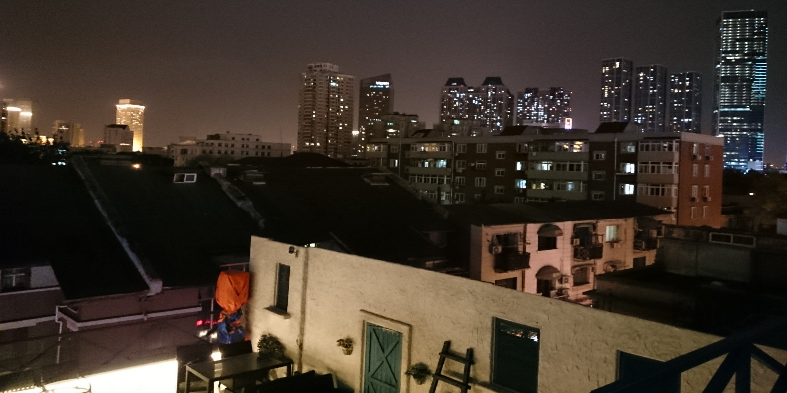
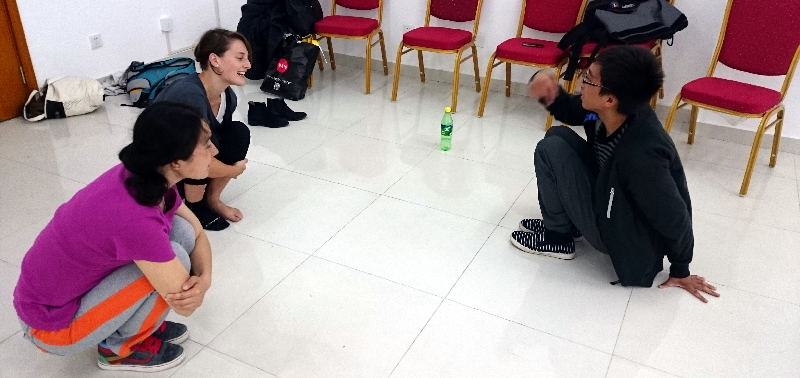
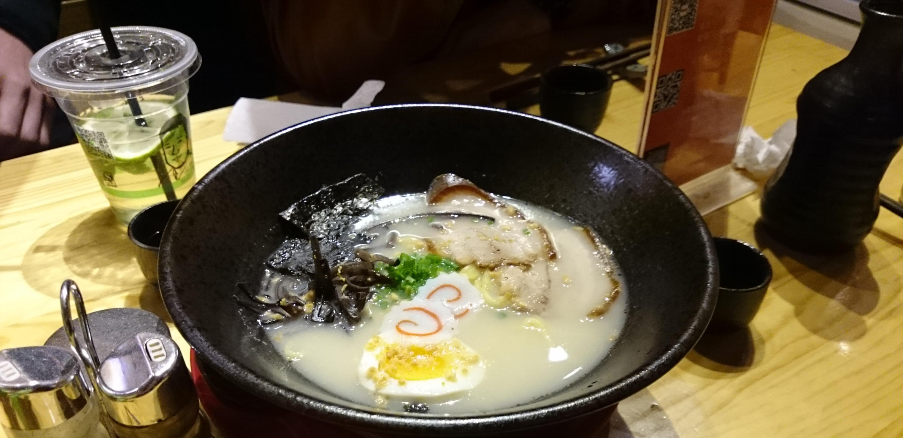
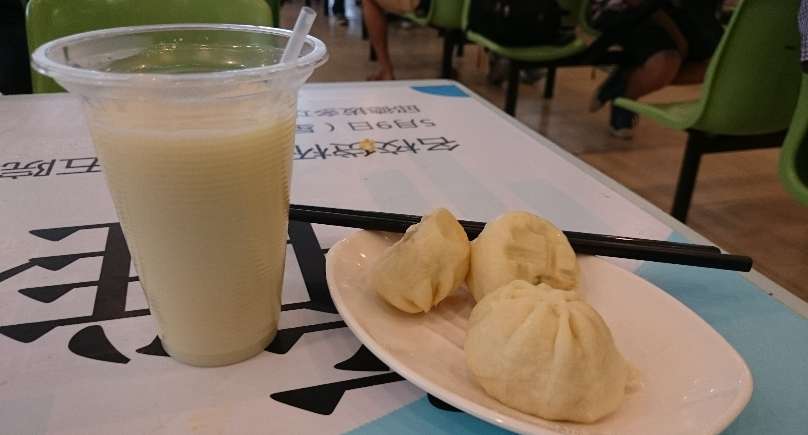
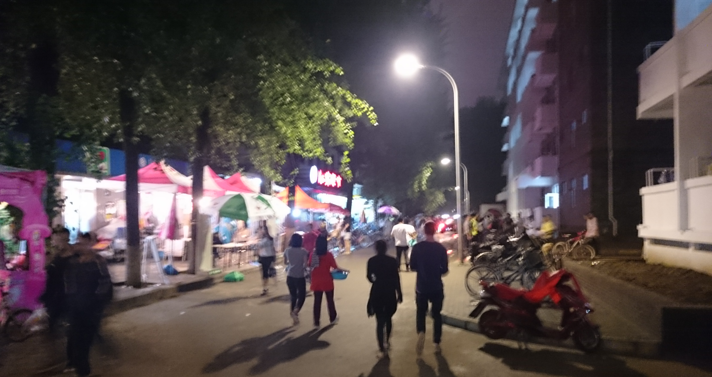
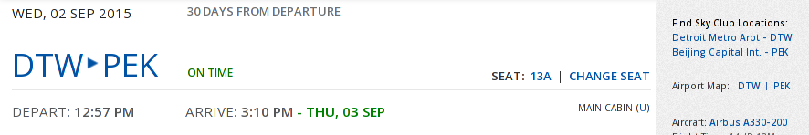
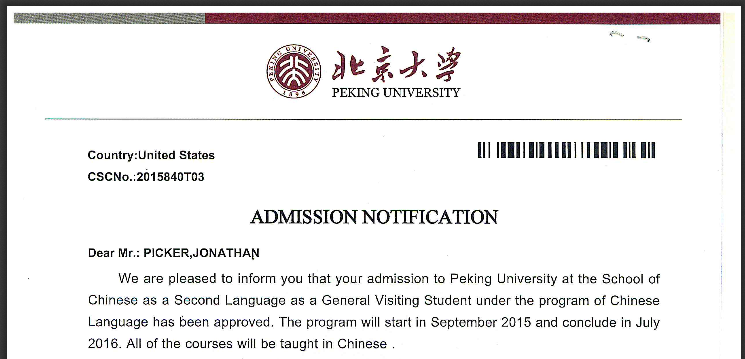
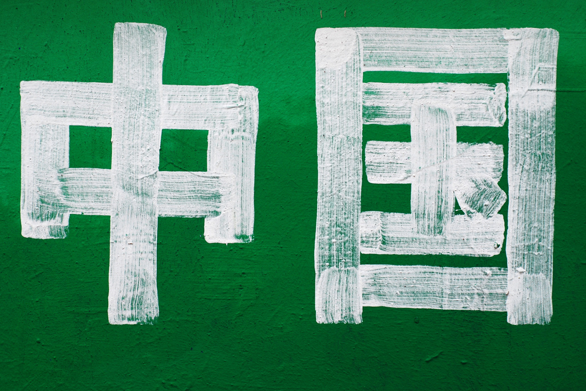

on and on.- by Koby from 22 November 2015
Day 80.
I'm gonna make this short, as I've got a midterm to study for.
Just wanted to check in and give ya'll a quick life update. I'm still alive and kicking, I took a spontaneous trip to Datong last weekend, and I woke up to a fresh blanket of snow this morning. Sorry for not writing more, folks, but I'll be home before you know it and I'm sure I'll just say it all again anyway.
Datong had some really amazing sights. If all goes as planned, once my time here has come to an end, I'll throw some of the best photos and videos into a movie, and I'll post a link to it here.
Thanks for reading.
on an adventure.- by Koby from 02 November 2015
Day 60.
It's been two weeks. Hello there.
It's been fun these past two weeks. I've spoken with interesting and inspiring people, I went on an adventure, and of course, there was halloween. Halloween isn't really a Chinese thing, but everybody sees the fun in dressing up and spooking each other, so, at least in areas with lots of foreigners, you'll see costumes and decorations just like in the states.
Did I mention I went on an adventure? I escaped the city for the first time since arriving here, and took a trip to the neighboring city of Tianjin. At the very last minute, the Hostel was booked, the train tickets were procured, and me and my roommate Adam were off. An interesting thing to note - the trip from my university to the Beijing train station takes longer than the trip from Beijing to Tianjin! By bullet train, traveling at a brisk 300km/h the trip between the two giant cities takes just 30 minutes. The tickets were about $9 each. The ride was comfortable.
We arrived, and immediately confronted our mutual unpreparadness - we had no itinerary, a rough idea of what attractions Tianjin offers, and no clue how public transportation works here. We had our eye on The Eye, the large Ferris Wheel that spans the width of a river in downtown Tianjin, and we decided to taxi over there first. Adam and I were happy to keep our minds and eyes open, for cool things to do along the way.
Near the ferris wheel (which we never actually ended up riding) we happened upon a busy and happening area filled to the brim with stands selling all manner of things, alleys lined with food, clothing, toys, you name it. We kept walking through the sea of people, and the shops continued, alley after alley. We walked until we were too tired to continue. This was our first encounter with Tianjin serendipity - it truly felt like there was another surprise around each corner.
After some struggle communicating with Taxi drivers, we managed to get a ride to our hostel, to set down our bags and check in. We stayed at the Tianjin Cloudy Bay hostel. As this was our first trip outside of Beijing, we had no idea what to expect - I had never stayed at a hostel before and was anxious to see what it's like. We walked down Ha'er'bin Street and kept our eyes out for it. Then, to our right, we passed a rainbow colored staircase. We doubled back and looked - there was the sign "Cloudy Bay". This was ours. Ascending the staircase, we opened the door, and met with the opening to a super hip bar - smartly dressed students on laptops, funky and unique interior design, and a foosball table for extra flair. We saw our bedroom, which was a comfortable dorm-style arrangement, 6 beds per room; and after we put down our bags, we immediately went up the stairs to check out the roof, which was similarly well-designed, stylish, and picturesque. For 80 Yuan per bed, the equivalent of roughly $13 USD, we were pleased.
Our day continued, and we visited and bumped into other cool places - we accidentally walked past a house made of vases and repurposed damaged pottery, and decided to pay the entrance fee to take a tour. We went to three different places for dinner, getting a variety of distinct styles of food. On our way back to the hostel, we accidentally found Bin Jiang Dao, a gigantic upscale commerical street, teeming with activity. There, we stopped for a minute to eat some ice cream, and saw some passersby sipping on drinks that glowed neon colors.
Though we only stayed one day in the city, and left soon after waking the next morning, Tianjin left a good taste in my mouth, as it seemed to will me to experience the things that it had to offer. My favorite thing may have been just after we had returned to the hostel, before we went out for the night. We were chatting up the Hosteliers in our broken Chinese, and managed to conscript one of them and another guest into a game of foosball. It was a nice crosscultural experience, as competition spans the boundary of language. These people were strangers to me, and yet, we shared that moment. Coming, going, or just showing up for work, our lives were all pointed in different directions; but for a wink of time, as fate would have it, we were there together.
on a day-to-day basis.- by Koby from 18 October 2015
Day 45.
Nothing particularly exciting happened this week, so I'll use this post to bring you all up to speed with what's been going on - I've been sharing some vingnettes and ideas with you all, but I haven't shared certain crucial details regarding school, my living conditions, making friends, etc.
School.
So, here we are in China on day 45. Wow the time has just flown by. Anyway, we started our classes about a month ago on September 14th. I'm studying within the department of Chinese as a Second Language, and therefore, the majority of my class time is spent in my two core classes - Chinese, and Spoken Chinese. Those two classes make up 14 hours of my week, spent with my 12 fellow classmates, who are all great people. Additionally, I'm taking a Chinese Writing Composition elective, and a Listening Comprehension elective. This is all at the intermediate level.
As I said, I spend 14 hours a week with a class of 12 upstanding students, hailing from the US, Germany, the Philippines, New Zealand, Ukraine, Spain, Scotland, and Japan. Occasionally, we attempt to organize social excursions outside of class, which meet with varying degrees of success. We come from many different backgrounds, and as such, we all have something to bring to the table. Alex came to study Chinese after a couple of years working as an engineer - when he's done, he's thinking of finding work in London for a year or two. Scott is the enthusiastic class-leader, and when he graduates, he wants to change the way companies do business with China. Hannah has moved around a lot, and is a bona fide German, Australian, and French. Kyle studies Network Science at Westpoint. There a quite a few foreigners in Beijing, but you can bet that any given one will have a unique reason for being there.
Teacher Yu and Teacher Zhang are also excellent people to spend 14 hours per week with. Admittedly, Teacher Yu's lectures put me to sleep sometimes, but I'm learning a lot and the pace is right in the sweet spot - challenging but definitely doable. Zhang Laoshi's class is a bit more interesting - it is the speaking class, so we do much more partner-work, and the class is overall more interactive, so you really can't fall asleep.
There are dictations. Chinese is a unique language for many reasons, one of which being its lack of alphabet! A few times per week, we are given dictations - character quizzes. The teacher will say a word, and we will have to write it down properly in order to get credit. This is what the majority of my independent study time is spent doing - memorizing characters, one flashcard at a time. Sometimes memorizing a word is just putting together two character that I already know - like 亲近 (qinjin, to get close) which I'm studying for this week. Other times, I have to learn the strokes for characters I've never seen before, like for 喧嚣 (xuanxiao, noisey).
Life.
I sleep in a really comfortable dormitory, which I share with my Australian roommate, Adam. Our dorm room is at least twice the size of the double I lived in back at Case, and contains a sink and a water-heater, as well as a small television which plays a number of Chinese channels. The bathrooms and showers are shared with the rest of the floor, and there is a small "kitchen" outfitted with a microwave and a hot-plate. Lately, I've been spending a bit of time in there, experimenting with a new steaming-rack I bought. I hope to get more creative as the semester continues, and return with all sorts of Chinese cooking prowess.
Adam and I have pretty different personalities, but we get along pretty well, and our humor is pretty compatible - when he told me that he's a fan of Community, I knew I was in the right place.
I typically save forays into the city for the weekends, but during the week I've started going to a couple of martial arts clubs. I've begun going to a lecture series from the Western Student Union on Wednesdays, which brings in notable speakers. I often find some-or-another objective for an odd afternoon. Usually, it's to purchase some or another item I may need for my dorm, or go to a place near campus that I haven't been to yet. It's not always easy to balance -- I want to go out and experience Beijing, but I also want to stay in and study for my classes, and I also want to continue doing some programming to keep my skills sharp.
So that's it, folks, my daily life in a nutshell. Not terribly unlike any University student's, save for the fact that 99% of the people I walk past on the street are Chinese.
P.S.: Yes, the smog is as bad as the media makes it seem. It's pretty random - we'll often have several consecutive beautiful days. Immaculately blue skies, crisp fresh air, invigorating breeze. Then, occasionally, there'll be a couple of days with AQI over 300. On these days, the sun is obscured. At night, the bright billboards illuminate the hanging fog to cast a colorful glow over the street. The decreased visibility warps the city's proportions, making your surroundings seem at once bigger and also smaller than you know them to be. When walking around campus on these days, you see a lot of masks - but you also see people without masks. Daily life continues. So it goes.
on national identity.- by Koby from 11 October 2015
Day 38.
This is a post about political and national identity. It's kind of boring, so you can skip it if you want.
Two nights ago, I went out with an Italian, an Australian, and a Korean. Passing by a Japanese style open-air restaurant, we decided to sit down with a decanter of luke-warm Sake, and, as our Korean friend assures us is tradition, a nice hot bowl of pork-bone soup.
Yesterday, I woke up at 8:00am to meet up with a Chinese girl that was born and raised in Germany, another Korean that was studying at Columbia, and a girl from Hong Kong. We took a taxi to the foot of Xiang Shan, or Fragrant Hill, stopped into a mom-and-pop restaurant for breakfast (noodle-soup and boiled dumplings), and began to ascend the mountain.
As an American in China, you begin to realize that the world is wider than you may first have guessed. You could be talking to your Italian friend, who knows that America is an imperialist bully; or you could be listening to your Chinese taxi driver, who admires America's power and technological advances, while acknowledging that with it came the displacement of dirty industry over to China. It makes me question assumptions I didn't even realize set me apart from others. It makes me question American Exceptionalism, isolationism, and even statehood as a fundamental concept.
I've called myself an American all my life, but I've never really had to stand up to that assertion because I've never truly encountered the Other. Well, now that I'm here in Beijing, living, dining, and playing soccer with representatives from Scotland, Italy, Germany, Russia, Belarus, Ukraine, Chile, India, China, Hong Kong, Taiwan, Japan, Korea; only now, for the first time, am I coming in contact with what it actually means to be American.
So what does it mean? Well, I can't really say. I'm still in the process of getting to know what it mean to be American. It's confusing to me, and I think it will take a while to work out. I do, however, know some of the implications. The first - that it means a lot less than you might think - American Exceptionalism is a concept that I've never consciously bought into, but the extent of its ludicrousness is now rendered into sharp relief. Another implication of being an American, is that you'll travel to far fewer foreign countries than an average european; and if you do travel, you'll probably realize that your education didn't waste a single lesson teaching the history of the country you visited. It means that the vast majority of Americans that attempt each day to solve our country's problems will never be capable of doing so with any sort of perspective. It also means you've grown up in an area with safe and cheap drinking water that comes out of your tap, and that you've probably never worried that the things you say on Facebook could get you thrown in prison.
It's been a while since I've checked in with you, so I wanted to invite you in to listen to what's been stewing inside my head these few days. As I've said, I'm still not sure what to make of this whole Being American thing - if you have any thoughts on it, feel free to let me know.
on courage.- by Koby from 12 September 2015
Day 9.
Reader discretion advised - the content of this post deals mostly with food. If you're hungry, don't read on until you've had a snack.
Since arriving here, food has been very, very important. Primarily it serves to satisfy hunger, but secondarily, it acts as an interface to the community. Not only does sharing a meal help me get to know my classmates, but the action serves as symbol for the culture as a whole. As it is said, 民以食为天, "To the people, food is as the heavens." As such, it is a useful measure of my acclimation to Beijing.
Things began slowly. At my first forays into the local cuisine, I was lucky enough to be accompanied by experienced people - people whom I had just met, but started to befriend. My first time attempting to eat without their expertise, however, I was terrified. Our largest dining hall, called 农园 ("Nong Yuan"), was packed with people. I mean packed. The walls were lined with windows, each displaying different regional foods, hundreds of options to choose from. Hundreds of options, all of them unrecognizable, all of them unpronouncable. It was... stressful. But you've gotta eat, right? So what did I do? I looked until I saw something vaguely familiar, pointed at it and said 这个 ("zhe ge" or "this one"). The next thing I knew, I was sitting down to eat. It was green and had corn in it, and it tasted pretty good; that's all I could really tell you.
Gradually, the pointing method grew more comfortable, and served me well. That is, until today. I set out this afternoon for a Taiwanese pancake. There was a stand on campus that prepared these things to order, and I had seen people walking around with them. They always looked delicious - lightly fried dough wrapped around meat, vegetables, or whatever else you preferred. At times I would stand near the booth, observing locals ordering, watching the food cook, weighing whether or not to order one myself. In the moment, I always decided not to - there are several dining halls within a few meters, why even undergo the discomfort of ordering this new food? Today, however, I felt differently. I was determined not to return to my dormitory empty-handed.
I arrived phone in hand, prepared to cross reference unfamiliar vocabulary from the posted menu onto my dictionary app. There were two people in front of me, which bought me time and provided valuable content for observation. I scanned the menu and determined necessary vocabulary - pancake, "shou zhua bing." Original flavor - "yuan wei". Now what questions would she ask me? I needed to make my order as simple as possible - fried egg, "jian dan." No meat - "bu yao rou." I rehearsed possible dialogues in my head, as I approached the window.
Beijing's food workers, from my experience, speak hurriedly, and with a distinct Beijing accent. As a foreigner, this means I can usually stammer some words out, but can rarely understand any sort of comment or inquiry as response. I was wary of any questions the lady behind the counter would ask me, and tried to anticipate them beforehand. We got off to a bit of a rough start as I reached the counter and heard something completely unintelligible stumble out of the cook's lips.
"shenme?" I asked - "what?" As she began to repeat herself, and my confusion became apparent, the student who had ordered in front of me kindly translated into clear Mandarin asking, "What would you like to eat?" Thanking her, I then replied to the cook, "bingzi!" or, "pancake!" A glance at the cook's face proved that my answer was not satisfactory. I pointed up at the menu, which was not easily in view from behind the counter, but eventually it was communicated - "shou zhua bing?" And she slapped a fresh circle of dough onto the griddle. My challenge continued as I pulled out my rehearsed vocabulary, and exercised my improvisational skills. With a bit of educated guessing and some teamwork, I managed to walk a way with a delicious hand-held savory pancake, enclosing a fried egg, some greens, and a bit of spicy "la jiang" sauce. It tasted like success.
It was so good I had to stop off the side of the road so I could concentrate on eating it slowly. As I leaned against a building, munching, watching Chinese faces, one after the other, passing in an endless stream, I had a moment to contemplate what I had just done. Too often in life, I am able to talk myself out of making the tough choice, justify taking the easier path. Reasons for inaction, propelled by fear, flow naturally to those who encounter opportunities to take courageous action. To conquer this false rationality, this innate flaw in the nature of humankind, is a triumph of the spirit. The courage it takes to do so releases the shackles of self-doubt, and liberates the heart.
signs of life.- by Koby from 07 September 2015
Day 4.
These few days have been turbulent ones. Culture shock has often been described to me as a turbulent phenomenon - bouts of lonliness or frustration and periods of peaceful acceptance. It's something I'll likely be dealing with my entire semester here at 北大 (Beida, shorthand for the name of my university), in its several stages.
One thing that has helped free me from the anxiety of starting at a new school, and the stresses of cultue shock, has been walking around the campus in the evenings. I've done this twice so far, and the solitary walks help clear my mind, while orienting me to the campus. Tonight, I had a rather simple objective - find a reusable water bottle at the campus market.
Before I set off, I found the market on the map I was given at registration, and planned my route. I exited 中关新园 (Zhong'guan xin'yuan, the name of my dormitory complex) and I headed toward campus. Passing some street-vendors camped outside the southeast gate, I showed my campus card to enter, and began to walk towards what I so far consider to be the heart of campus - the Central Business District. It had been a beautiful blue day, and it was a nice warm evening. I navigated the streets nearly automatically, half from memory, and half by following the continuous surge of people in and out of the campus. As I walked near a group of students talking in Chinese, I tried to discern what they were discussing - something about the beautiful sky, and the splotches of color as the sun set. At one point, I took a wrong turn, but instead of turning back, I chose to rely on my internal compass, and managed to come back around to my destination.
The Central Business District, known also as the CBD, is a good indicator of the vastness of the miniature city that is campus. Walled on all four sides, the university is monitored by uniformed gatekeepers, who control access to the university - generally only those with campus cards may enter. The nothern section contains many of the humanities classrooms, and also beautiful greenery, centuries-old buildings, and the pristine Weiming lake. The southern section has a bit more cement - modern buildings vast and small, and wide, named roads. It was through the southern section that I traversed the hustle and bustle as I approached the CBD. The streets, now crowded, teemed with walking young adults, ladies sitting side-saddle on the backseats of bicycles, electric scooters whistling, announcing their presence, and the occasional truck. All of us shared the road, and yes, it is a miracle that we all managed to pass without collision. Yet, this is the way here; it doesn't work the same way as in the US, but still, somehow, it works.
I arrived at Wumei, and descended the staircase to the underground market. I hadn't been there before, and was excited to see what mystery an underground market could hold. In the end, not very much. Think of it as a combinatio of your local CVS, and a typical university apparel shop. It didn't seem underground, it just seemed indoors. Still, I came for a water-bottle, and I paid my 19 kuai. At a conversion rate of about one sixth, a fitting price. I left the building feeling accomplished, and made my way back past the crowd, the fruit stands, the vendors selling their wares, the campus Subway, the glowing signs announcing 24-hour self-service banking, over the bridge that serves as a crosswalk to protect from the irreverent drivers below. This city is now the city that I belong to. Its people, for me to learn from. Its land, for me to explore.
The moment we've all been waiting for- by Koby from 04 September 2015
I'm here.
I got in yesterday. The plane ride was uneventful. We took an arctic route which was super exciting, flying through the north pole to get to China. I watched some movies. Sure.
The interesting part is getting off the plane. I stumbled my way through the airport, passing jaded customs officers and families eager to see distant relatives. I diffidently wandered around outside the airport, trying to determine how to get to where I needed to go. Without too much trouble, I found the ticket kiosk and mounted the bus. This was my first opportunity to sit calmly and take in my surroundings.
As I sat staring at the window, my first thought was of the sky. It was blue. I was expecting it to be grey and smoggy. I felt cheated. Little did I know, the air quality on that day was strictly regulated by the government, because there was a national holiday. Traffic controls and controls on industry, I later learned, led to clear skies for my welcome to Beijing.
Once at the stop, I wandered around some more, walking for a few km and second guessing myself at each step. I found my hotel and resolved to stay there for the night - I was tired from my journey and in no mood to explore in the dark. So, at 9pm, as late as I could muster, I fell asleep.
Today, I woke up to those grey skies I had been expecting. I took a campus tour, which apart from getting rained on, was quite nice! I met a Swede, Russian, Mexican, and Italian, as well as a couple of Japanese people and our Chinese tour guides. People were friendly and we all enjoyed lunch together at the end of the tour - this was my first Chinese meal in the country, and that was kind of cool. Our guides purchased two big bowls of stuff - don't even try asking me what it was called, but it was filled with meat of all shapes, sizes and types, and some vegetables and mushrooms. We each also had a bowl of rice. As we each stuck our chopsticks into the communal bowls of stuff, we conversed with each other in English and tried to break the ice. One among us, named Du Bian, was Japanese, and wasn't adept enough at English to contribute to the conversation, but he and I tried to get to know each other using Chinese to bridge the language gap.
By far the most notable cultural barrier for me in Beijing is the language. Because I'm so unfamiliar with life and norms here, I try to tread carefully - as a result, I've been nervous much of the time on this first day. As I start to find a niche here, and get used to the rhythm, I'm sure this issues will fade. For now, however, I'm dealing with it by curling up in bed and eating a brownie left over from the airplane. I think that this coping mechanism is an effective one.
The moment we've all been waiting for- by Koby from 04 September 2015
I'm here.
I got in yesterday. The plane ride was uneventful. We took an arctic route which was super exciting, flying through the north pole to get to China. I watched some movies. Sure.
The interesting part is getting off the plane. I stumbled my way through the airport, passing jaded customs officers and families eager to see distant relatives. I diffidently wandered around outside the airport, trying to determine how to get to where I needed to go. Without too much trouble, I found the ticket kiosk and mounted the bus. This was my first opportunity to sit calmly and take in my surroundings.
As I sat staring at the window, my first thought was of the sky. It was blue. I was expecting it to be grey and smoggy. I felt cheated. Little did I know, the air quality on that day was strictly regulated by the government, because there was a national holiday. Traffic controls and controls on industry, I later learned, led to clear skies for my welcome to Beijing.
Once at the stop, I wandered around some more, walking for a few km and second guessing myself at each step. I found my hotel and resolved to stay there for the night - I was tired from my journey and in no mood to explore in the dark. So, at 9pm, as late as I could muster, I fell asleep.
Today, I woke up to those grey skies I had been expecting. I took a campus tour, which apart from getting rained on, was quite nice! I met a Swede, Russian, Mexican, and Italian, as well as a couple of Japanese people and our Chinese tour guides. People were friendly and we all enjoyed lunch together at the end of the tour - this was my first Chinese meal in the country, and that was kind of cool. Our guides purchased two big bowls of stuff - don't even try asking me what it was called, but it was filled with meat of all shapes, sizes and types, and some vegetables and mushrooms. We each also had a bowl of rice. As we each stuck our chopsticks into the communal bowls of stuff, we conversed with each other in English and tried to break the ice. One among us, named Du Bian, was Japanese, and wasn't adept enough at English to contribute to the conversation, but he and I tried to get to know each other using Chinese to bridge the language gap.
By far the most notable cultural barrier for me in Beijing is the language. Because I'm so unfamiliar with life and norms here, I try to tread carefully - as a result, I've been nervous much of the time on this first day. As I start to find a niche here, and get used to the rhythm, I'm sure this issues will fade. For now, however, I'm dealing with it by curling up in bed and eating a brownie left over from the airplane. I think that this coping mechanism is an effective one.
Another pre-trip milestone post- by Koby from 03 August 2015
Today, my plane has finally been booked. It feels like the last thing I have to worry about has been taken care of - this feeling is a false one, there are plenty of things I can still worry about. Nevertheless, the security of a confirmed ticket does a lot to make this entire adventure more real. It gives a cold hard date and time to things. I'm glad it's done.
At this point, I'm waiting on the visa service to process my application, deliver it to the proper authorities, and send all my stuff back to me. So that's out of my hands. The only thing left for me to do is pack, which I can't do all too much of 30 days out; and plan, which I refuse to do all too much of 30 days out. The problem with planning, or attempting to plan, is that there are too many unknowns to plan effectively. Sure, I should make sure to be prepared with some spare cash and a few friends to call on, but I won't really know what it is that I need to do until I'm on the ground. So, trying to obsessively take control of the first couple of days in China is unrealistic at best, and psychologically harmful at worst. Better to just do what needs to be done, when it needs to be done.
I have been given some great advice over the past few weeks, from those who have studied abroad before me, and from those who have grown up in Beijing or other parts of China. This advice has been invaluable to me in conquering the logistics and anxiety of going to a new place like this. One pearl of wisdom I have received that really helped me is this: when you are feeling stressed out, just relax, and go with it. I've realized the stress I feel regarding Peking and the lack of information I receive from them is a form of culture shock - I expect them to do things differently because I'm used to the way things have always been for me. If I understand that things work differently in China - and that things still inevitably work, in China (which they do, most of the time) then I have no reason to worry.
Thanks to those of my friends that have given me advice and moral support at any point leading up to this. Thank you to my parents for helping me deal with paperwork, and for a million other things. To all of you readers out there, I leave September 2nd! And you can bet I'll be blogging from that 12 hour flight.
On friendship - by Koby from 24 July 2015
I've been thinking about friendship a lot recently, as I toil at home in the weeks leading up to my trip. I've been thinking about a lot of things, and friendship is one of those things. I've been thinking.
I left highschool two years ago, left a number of people with whom I anticipated losing touch. I've lost touch with friends before, and felt little at the thought of losing touch with these ones. "So it goes," I thought -- after all, I would keep in touch with those friends of mine who warranted the stability of friendship. Time would filter out the noise in my life, and those remaining were the friends worth having. On the whole, I still think this is not a bad way to think about things. Still, I wish I would have recorded my hopes and expectations at that time, to compare those predictions with my experience.
So as planned, I lost touch. Friends were filtered out of my life. I made new friends. And now it's summertime, and I'm toiling. Now it's summertime, and I'm reaching out to old friends. I'm getting lunch with them, seeing movies with them, and wondering whether our friendship means something different now than it did before. It's lovely to catch up with old friends that you haven't seen in a while, but sometimes... well, sometimes it just isn't. While sometimes catching up with someone who knew the old you may help you clearly see the new you, sometimes "catching up" can be a wake-up call, reminding, there's a reason this person is no longer in your life. Things are different now. Move on. Sometimes "catching up" makes you question who your friends even were, or whether you even had them. Whether you even have them.
I think friends are people that care about you and are there for you. Friends notice when you need them, and will lend you their support. They satisfy a need, whether that be companionship or baked goods. Friends are any or all of these things. Acquaintances that do not do these things are distractions. Complex, conscious, often wonderful distractions, but distractions all the same. Like alcohol or chocolate cake, they may allow us forget ourselves, and we should be conscious of how we make use of them.
That's what I think. I'm curious to hear about your thoughts on friendship.
Beijing, here I come!- by Koby from 2 July 2015
So it happened. My decision has been made. The offer from Beijing arrived in my inbox this morning. In the passenger seat of Dad's car as we traveled from South Carolina back home, an email from Autumn Beechler appeared on my phone - I saw the text, "I'm extremely excited to..." and put the rest together. It was exciting, to say the least.
And now my job is to tell people! And worry about Visas. And housing. But I prefer telling people, so I'm doing more of that. The Visa and housing issues are solveable - I plan to talk to Autumn about them soon. It's just a matter of doing what needs to be done. Then, I need to figure out:
- Who my point-person is in Beijing, so I can stop bothering poor Autumn with all my questions, and
- How to make sure I'm taking the classes I should be taking.
Worst to worst, I can't take any credits that count toward my CS requirements, and this acts as a sort-of "gap semester." I will experience China immersively and fully, without worrying about computer science classes. Normally, this would be unreasonable, but considering my program is free of charge, it's definitely concievable. Ideally, though, I'd like to learn a bit of Computer Science. Regardless, I don't think it'll come to this worst-case scenario.
So this is where I'm at. I'll try to keep you updated at milestones along the way. Thank you for sticking with me, and we've only just begun. Soon, I think, the content of these posts will change from "this is what I'm worried about" to "check out this awesome thing I did!"
Starting down the path - by Koby from 20 May 2015
It feels... deceptive to title this post as I have. I have been walking this path for about 4 months, now. Last February, as I scrambled to get the Chinese government the documents they needed, that was the start of my journey.
I was given a unique opportunity - to study abroad in Beijing with a full scholarship, courtesy of the Chinese government. The catch? I had two weeks to put the paperwork together. The other catch? The Chinese government isn't known for being particularly transparent, ie. good luck getting clarification on anything. After a flurry of notaries, and a number of instances of "I hope this is what they meant by..." I finally finished the application process. I was free to wait for the response, which I would receive in... July?! Are you kidding? I didn't even know what my chances were -- Case has never even applied for this scholarship before, and had absolutely nothing to go on. I'm not hanging my fate on this until July.
So, it was decided that I apply to Hong Kong Polytechnic University as well. And after a much shorter and less stressful application process, I waited about 4 weeks and... this morning I woke up and there it was - the email that said: "your admission to the programme has been approved."
And now this is a thing -- not 99%, not "most-likely", but definitely a thing! Whether or not Beijing accepts me in July, I'm going to China. It's time to invite you to join me on my journey. We are starting down this path.
P.S. Shout out to Autumn Beechler for being a great Study Abroad Advisor! Without her, I don't know where I would be.